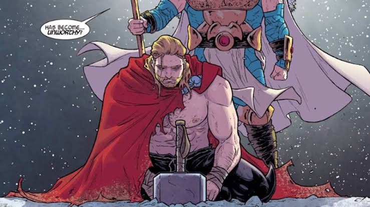

Thor perde Mjölnir e oferece recompensa de dois combos e um refrigerante
Publicado em por Eddie Brock

Thor, o Deus do Trovão, anunciou nesta manhã que perdeu seu famoso martelo durante uma passagem por Nova York.
Segundo o herói, ele se lembra de ter utilizado o Mjölnir na noite anterior, mas não consegue recordar onde o deixou.
Busca mobiliza Manhattan
Moradores passaram a procurar o martelo depois que Thor anunciou uma recompensa de dois combos completos e um refrigerante grande.
Até o momento, ninguém conseguiu encontrar o objeto.
Thor apresenta nova teoria
O herói agora acredita que o martelo pode estar entre Manhattan, Asgard ou debaixo do sofá.
Voltar para a página inicial